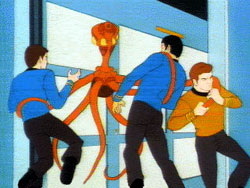

|
MANCHETE
DO EPISÓDIO
Reciclagem
de elementos fantásticos não funciona desta vez
Episódio
anterior | Próximo episódio Sinopse:
Data Estelar: 5143.3.

Durante patrulha de rotina próxima a Zona Neutra Romulana, a Enterprise
encontra uma nave danificada por uma tempestade de meteoros, e a deriva. A bordo
desta nave é encontrada um sobrevivente, Carter Winston, um filantropo dado
como desaparecido a cerca de cinco anos.
O sobrevivente é trazido a bordo da Enterprise, onde recebe a noticia de que
sua noiva, tenente Anne Nored, faz parte de tripulação. Os documentos do
passageiro são verificados, e em seguida ele é submetido a um exame medico por
McCoy. O médico da nave percebe algumas irregularidades nos exames, mas as
atribui a algum erro de leitura do seu equipamento médico.
Logo após os exames, Winston recebe a visita de sua noiva, Tenente da Frota
Estelar lotada como tripulante da nave. Ele explica vagamente que sua nave
anteriormente teria sofrido um acidente, caindo no planeta Vendor, onde foi
socorrido. Também de forma vaga Winston diz ter sofrido mudanças após o
acidente, e que devido a estas mudanças eles não podiam mais ficar juntos.
Após este encontro, Winston se dirige ao escritório do capitão, onde assume
sua verdadeira forma e toma a aparência de Kirk, deixando-o desacordado. Em
seguida a duplicata se dirige a ponte da Enterprise e ordena a Sulu um curso que
levará a Enterprise para dentro da Zona Neutra Romulana. Enquanto isto McCoy
começa a desconfiar dos resultados dos exames de seu passageiro.
Apesar dos protestos de Spock e Sulu, a mudança de curso é executada e o
metamorfo deixa a ponte. Algum tempo depois, o verdadeiro Kirk reaparece na
ponte, sem lembrar dos eventos anteriores, ele recebe com surpresa a noticia da
mudança de curso, após assistir a gravação do diário visual da ponte,
ordena a retirada imediata da Zona Neutra.
Kirk e Spock deixam a ponte especulando sobre o que teria acontecido, enquanto o
Metamorfo, de novo sob a forma de Carter Winston, ataca McCoy e toma sua forma.
Sem saber disso, a tenente Nored vai até a enfermaria, onde encontra o falso
McCoy, e conta a ele que ainda ama Winston.
Kirk e Spock chegam a enfermaria assim que Nored está terminando sua conversa,
e pedem a McCoy que faça um exame completo no capitão, mas este informa não
poder realizar tais exames de imediato. Os dois deixam a enfermaria, mas notam
algo de estranho no comportamento do medico da nave e retornam para investigar,
encontrando o medico desacordado.
Kirk percebe a existência de um leito a mais na enfermaria, e deduz que
tratava-se de Winston, transformado. Após Kirk ameaçar jogar um tipo de acido
na mesa, ela assume a sua verdadeira forma de “Vendoriano”. Este ataca o
trio e foge pela nave, mas é interceptado pela tenente Nored, entretanto, sob a
forma de Carter Wisnton, o que fez com que a tenente Nored hesitasse em disparar
sua arma permitindo a fuga do intruso.
Enquanto isto a Enterprise é cercada por dos cruzadores de batalha Romulanos,
ainda em espaço Romulano, que ordenam a rendição da nave. Kirk conclui que o
Vendoriano é seria um espião Romulano, e que tudo havia sido um truque para
levar a Enterprise para dentro da Zona Neutra. Kirk informa ao comandante
Romulano sua descoberta a avisa que não ira entregar a nave.
Enquanto isto o Vendoriano, agora sob a forma de um tripulante, é surpreendido
por Scotty na engenharia, mas o engenheiro também é posto fora de combate pelo
intruso, que desabilita o escudo defletor da Enterprise, deixando a nave
indefesa.
Mais uma vez o Vendoriano novamente sobre a forma de Winston é encontrado por
Anne Noren. O Vendoriano conta a ela que Winston havia sofrido um acidente e caído
em seu planeta, onde recebeu cuidados, mas não sobreviveu muito tempo. Ele diz
ainda que ao assumir a forma de Winston, teve acesso aos sentimentos dele por
Nored. Ele mostra a sua verdadeira forma a Nored, quando é surpreendido por
Kirk.
Antes que o capitão possa fazer algo, a Enterprise sacode atingida por um
disparo Romulano, dando a chance do metamorfo fugir mais uma vez. Kirk volta a
ponte onde recebe um ultimato do comandante Romulano. Kirk está a ponto de se
render quando Sulu informa que os escudos foram restabelecidos.
A Enterprise dispara contra as naves Romulanas, desabilitando uma e fazendo com
que a segunda nave se retirasse. Kirk descobre então que não foi Scotty quem
consertou os escudos, e deduz que Winston deve ter se transformado em uma espécie
de escudo para a nave. Nesta hora o Vendoriano aparece na ponte, confessando ser
um espião Romulano, mas dizendo tendo adquirido os sentimentos de Carter
Winston por Nored, não pôde deixar que os Romulanos a machucassem.
Ele se entrega, sendo informado por Kirk que irá a julgamento por seus atos,
mas que suas ações para salvar a Enterprise seriam levadas em consideração.
Ao mesmo tempo a tenente parece disposta a manter um relacionamento com o alienígena.
A Enterprise deixa a Zona Neutra com a situação sobre controle. Comentários:
Uma fábula espacial. Talvez seja esta a
melhor definição para este episódio da Série Animada, cuja moral da história
nos diz que, se o poder absoluto corrompe, o amor absoluto traz a redenção.
Para montar esta fabula, James Schmerer usou elementos reconhecíveis da Série
Clássica como fonte de “inspiração”. Podemos ver alguma semelhança
com "The Man Trap", onde McCoy, em determinado momento confunde
todo o sentimento que nutria por sua antiga namorada, fazendo com que ele
perdesse o bom senso, e colocando em risco a vida de seus colegas.
Alias também neste segmento da Série Animada, McCoy é mostrado
negligenciando os resultados dos exames em Winston, algo que não faz muito bem
a imagem do nosso bom doutor. Aqui em “The Survivor”, é Anne Nored
que tem seu julgamento ofuscado, ao rever seu antigo amor, mesmo sabendo que se
trata de um transmorfo. Esta relação de “amor” universal, também é
mostrada em “Metamorphosis” quando Zefram Cochrane escolhe ficar com
a criatura de energia que o salvou e que o ama.
O elemento novo nesta mistura é o Vendoriano, capaz de se transformar em
qualquer coisa, um ser de forma e capacidades que tornaria este episódio inviável
em Live action. Este ser cria uma situação que faz com que a Enterprise
atravesse a zona Neutra pela segunda vez, após os eventos de “The Incident
Enterprise”, outra referencia clássica.
Infelizmente o episódio não consegue ser tão interessante quanto os
anteriores, pois peca ao usar elementos reciclados “em vão”, sem conseguir
os mesmos efeitos que as edições “homenagedas” (e olha que "The
Man Trap" nem é considerado um bom episódio) apenas para chegar a um
final inverossímil, além de decepcionante. O episódio vagueia nos diálogos
clichês, e atinge pouca “massa critica” em seu clímax, quando a Enterprise
é cercada pelas naves Romulanas.
Além de não ser nada original, ele exagera demais ao propor que a criatura
Vendoriana pudesse se transformar em um escudo (alterando sua forma, massa e
capacidade de absorver energia) capaz de proteger a Enterprise do Disparo de um
cruzador Romulano, criando um paradoxo. Um ser com tais poderes poderia usar uma
forma mais efetiva para incapacitar a nave e levá-la ao espaço Romulano, o que
parecia ser o plano desde o principio. Ao contrario, ele opta por deixar o capitão
livre, apesar de desacordado, o que fatalmente denunciaria seu plano, numa ação
digna do agente do Controle, Maxwell Smart.
Entre os detalhes que ajudam o segmento a naufragar está à existência de um
playboy milionário que gasta seu tempo e dinheiro ajudando planetas da Federação
em apuros, algo que não parece caber universo de Jornada nas Estrelas e
na Federação, mesmo nos tempos de Kirk, onde a Frota Estelar sempre teve este
como um de seus papeis principais e a figura de um “milionário” sempre
pareceu ser um anacronismo.
Enfim, o segmento se mostra uma colcha de retalhos, mal costurada, com um ritmo
cansativo apesar de durar apenas vinte minutos e, que nos poucos momentos em que
tentou ser criativo errou na dose, hora criando elementos que não encontram no
eco no conceito da Série Clássica, hora criando elementos fantásticos
demais mesmo para uma série de ficção voltada para um publico mais jovem, e
com uma solução final tão sem imaginação quanto a trama que a originou.
De relevante fica apenas a descoberta de que McCoy tem uma filha chamada Joanna.
Porém, como isto nunca foi confirmado em tela e a Série Animada é
considerada não canônica, tal detalhe vai para o setor das especulações e
cabe a cada um considerar fato ou não, embora a maior parte dos sites não
oficiais de Jornada considere isto um fato, mas ainda assim muito pouco é
realizado aqui. Citações:
Spock: "There is one person on board that she will
be especially happy in knowing that you is alive. Mr. Winston, lieutenant Anne
Nored."
("Existe uma pessoa a bordo que ficará especialmente feliz em saber que o
senhor está vivo. Sr Winston, tenente Anne Nored.")
Spock: "I Believe our regulations are quite clear, Doctor."
("Acredito que nossos regulamentos são bem claros, doutor.") Trivia:  Primeira aparição da “felinoide” M’Ress. A exótica tenente seria vista
ao todo em seis episódios da Série Animada. Arex também esta presente, mas não
fala uma palavra.
Primeira aparição da “felinoide” M’Ress. A exótica tenente seria vista
ao todo em seis episódios da Série Animada. Arex também esta presente, mas não
fala uma palavra.
O ator responsável pela voz de Carter Winston, Ted Knight, viria a integrar o
elenco de The Mary Tyler Moore, série de TV que se tornaria clássica. No
Brasil, Mary Tyler Moore foi exibida pela TV Globo no final da década de 70, e
mais recentemente pelo canal Multishow.
Primeira aparição dos Romulanos na Série Animada, que teriam ainda
mais duas participações.
O autor deste episódio, James Schmerer, escreveu roteiros para várias séries
de TV. Numa interessante coincidência, ele colaborou com o roteiro do episódio
“Hellfire”, da série MacGyver, junto com Stephen Kandel, que também
escreveu para Jornada nas Estrelas (Série Clássica e Animada).
Neste episódio a convidada especial é ninguém menos que Nana Visitor, que
viria a interpretar Kira Nerys em Deep Space Nine.
Esta é a única vez que a vemos a filha de McCoy, Joana, ser citada em tela.
Ela voltaria a ser citada no livro “Crisis on Centaurus”( Pocket Books).
Joanna deveria ter aparecido no episódio “The Way to Éden”, da
terceira temporada da Série Clássica, como um dos hippies espaciais,
mas após várias versões do roteiro serem modificadas, a personagem acabou
virando o antigo affair de Chekov, Irina Galliulan.
Joanna é o nome de uma das filhas de D.C. Fontana.
Segunda aparição de um transmorfo em Jornada nas Estrelas. A primeira
foi em "Whom Gods Destroy", da terceira temporada da Série
Clássica. Eles voltariam em Jornada nas Estrelas VI e, finalmente,
em Deep Space Nine.
"The Survivor" foi novelizado por Alan Dean Foster, em 1974.
Ficha
técnica: Escrito por
James Schmerer
Direção de Hal Sutherland
Exibido 13/10/1973
Produção: 05 Elenco:
William Shatner como James Tiberius Kirk
Leonard
Nimoy como Spock
DeForest Kelley como Leonard McCoy
James
Doohan como Montgomery Scott
George Takei como Hikaru Sulu
Nichelle Nichols como Uhura
Elenco convidado:
Nichelle Nichols como Tentente Anne Nored
Ted Knight como Carter Winston
James Doohan como Comandante Romulano
James Doohan como Gabler
Majel Barrett como Tenente M'Ress
Majel Barrett como Voz do computador
Episódio
anterior | Próximo episódio
|